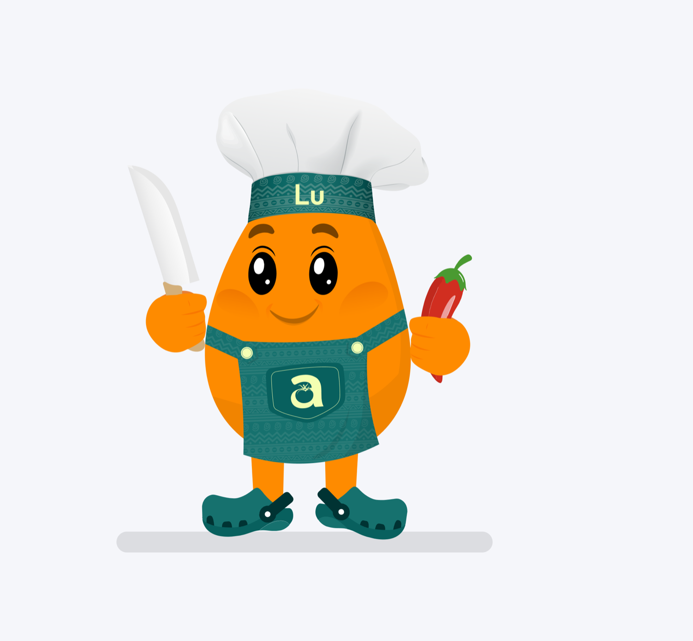

Welcome Lu: your AI kitchen companion, crafted with care.

Have you ever stared blankly at your refrigerator, overflowing with possibilities yet devoid of inspiration? That exact moment, 7:04 pm, door open, cold light on your face, is why Lu exists.
We didn't set out to build a chatbot. We set out to build the friend every Nigerian kitchen deserves: someone who knows that egusi thickens differently depending on how you toast the seeds, that party jollof is a different dish from Tuesday jollof, and that "one cup of rice" means something very specific in your mother's house.
Why we built Lu
Every nutrition app we tried treated our food as an afterthought. Jollof rice reduced to "rice, cooked, with tomato sauce." Pounded yam missing entirely. Suya listed as "beef kebab." If the database doesn't respect the food, the numbers can't be trusted, and if the numbers can't be trusted, why track at all?
So we built our own database first: 200+ Nigerian dishes, measured in the portions we actually use: wraps, cups, bowls, pieces. Then we gave it a personality.
"Lu answers like a friend who happens to know the macros of every Nigerian dish: swaps, portions, cooking tips and all."
What Lu actually does
Think of Lu as part chef, part coach, all Naija. On any given day, Lu can:
- Answer the 7pm question. "What can I eat tonight under 600 calories?" gets a real answer: efo riro with one wrap of eba, 540 kcal, 32g protein, not a lecture.
- Swap smart. Craving something heavier than your goal allows? Lu suggests the version that fits: cauliflower fufu instead of eba saves 120 kcal without losing the ritual.
- Plan your week. Tell Lu your goal and get a weekly Nigerian meal plan with the grocery list included, Sunday market run sorted.
- Nudge before you drift. Forty grams short on protein this week? Lu notices on Wednesday, not after the weigh-in.
Toast your egusi seeds before grinding for deeper flavour, and you'll use less oil to get the same richness. Your macros will thank you.
Crafted with care, literally
Lu's knowledge comes from the same place your recipes do: real kitchens. Every dish in the database was validated against how the food is actually cooked and served, and Lu's suggestions are calibrated to your goals, your spice tolerance, and your history, not a generic template written for someone else's cuisine.
Even the little things matter. Lu greets you with "Ẹ káàbọ̀" because arriving at your own dinner table should feel like a welcome, not a weigh-in.
Say hello
Lu is live inside the akaani app today, free for your first 30 days. Open the chat, tell Lu what's in your fridge, and let the 7pm struggle end where it started, with good food, made yours.